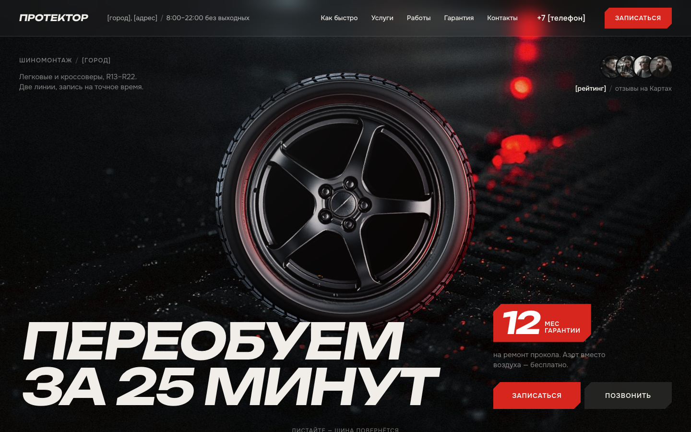
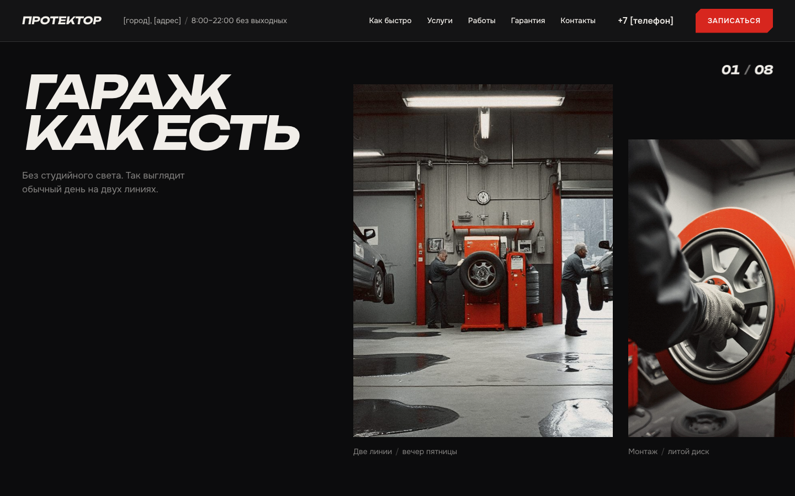
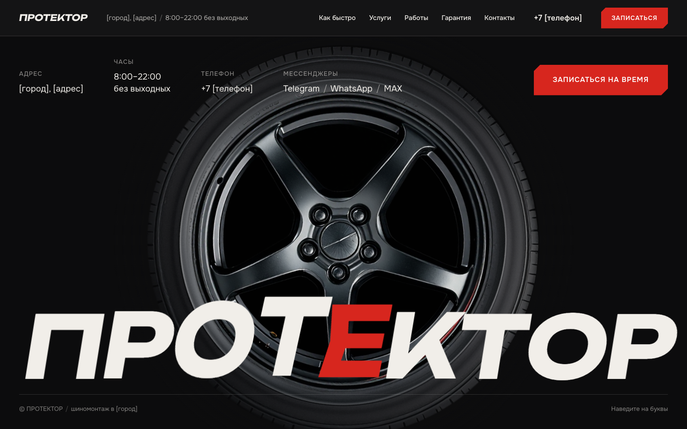

Портфолио / 2026
Араз Наджафов. Делаю backend-сервисы, сайты и автоматизации с помощью ИИ-агента Claude Code: разбираю задачу на шаги, ставлю задачи агенту, проверяю результат и довожу до рабочего состояния. Высшее образование «Информатика и вычислительная техника» (УрГЭУ, 2024).
01 / backend · C#
Backend для шиномонтажа и автосервиса: клиенты и машины, запись по боксам, заказ-наряды, оплаты, отчёты, напоминания, журнал аудита.
C#, .NET 10, ASP.NET Core, EF Core, PostgreSQL, JWT, Docker, xUnit, Testcontainers, GitHub Actions
Код на GitHub02 / backend · C#
Backend магазина, главная задача которого — остатки под нагрузкой: товар резервируется на 15 минут, неоплаченные брони снимаются автоматически.
C#, .NET 10, ASP.NET Core, EF Core, PostgreSQL, Redis, Docker, k6, xUnit, GitHub Actions
Код на GitHub03 / backend · ИИ
Клиенты пишут в Telegram или через сайт; Claude классифицирует сообщение, простые вопросы получают ответ за секунды, остальное уходит оператору с кратким пересказом и черновиком.
C#, .NET 10, Anthropic C# SDK (Claude), Telegram Bot API, PostgreSQL, Docker, xUnit, GitHub Actions
Код на GitHubКак сделаны проекты
Backend-проекты созданы в работе с ИИ-агентом Claude Code: я ставил задачи и проверял результат, сейчас детально разбираю код и архитектурные решения (они описаны в репозиториях — раздел docs/decisions.md).
04 / промо-сайт
Тренировочный сайт по подробному ТЗ: вымышленный бренд, десктоп 1440 px, без фреймворков.



05 / автоматизация
От карты до сообщения владельцу: выборка бизнесов на Яндекс Картах, аудит их сайтов скриптами, демо-сайт по реальным данным карточки и отзывов, текст первого сообщения и сценарий звонка. Пример находки: у шиномонтажа с 400+ оценками кнопка «Сайт» вела на чужой спам-форум. Демо — по запросу: в нём данные реального бизнеса.
06 / контент
Сценарий, озвучка, картинки нейросетью, анимация, монтаж, обложка. Два канала, 9+ роликов и 15 шортсов, разбор статистики в YouTube Studio и план улучшений.
07 / точность
Промо-страница по спецификации «в числах»: один цикл анимации с поправкой на частоту экрана, честный прелоадер, пин-секция, одометр, перемотка видео скроллом. Сверка с эталоном на четырёх ширинах — расхождение 2–10 px.
08 / процесс
Чтобы результат не скакал от проекта к проекту, веду для агента собственную базу инструкций: типографика, интерфейс, движение, чек-лист приёмки.
Пример правил